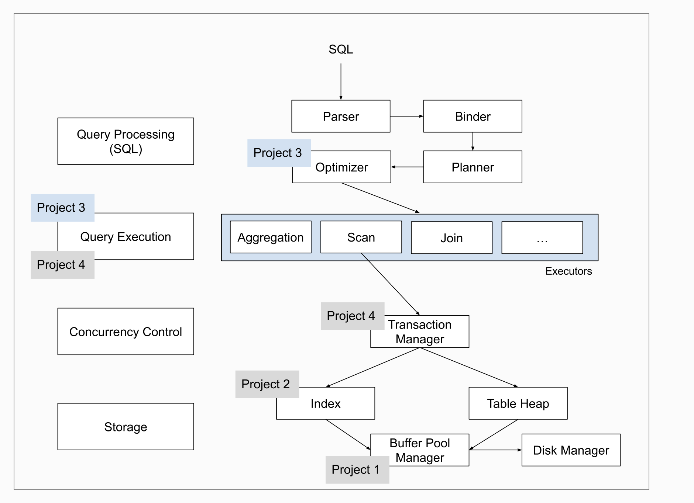

本文目的在于记录复盘做15445这个项目的经验总结 以及应付面试
先直接说5个lab


lab0
lab1
lab2
lab3
最主要要把框架看懂
value，tuple，table，column，schema
AbstractExecutor
SQL拆分成一棵执行树之后，其中的节点的功能承担者，也是这次实验主要要完成的部分。
构造执行树时不会构造Executor，而是用后面的AbstractPlanNode来构造树，只有在执行这棵树的时候会初始化对应的Executor来执行。
1
2
3
4
5
6
7
8
9
10
11
| // 每个执行器需要初始化的东西都不一样，一般是初始化指向表头的迭代器指针，或者自己定义的一些辅助循环的值
// 拿seq_scan来说，就需要在这里将迭代器指针指向表头。
void Init()
// 需要做到调用一次next就输出且只输出一组tuple的功能，输出是通过赋值*tuple参数，并return true
// 如果没有能输出的了，return false
void Next(Tuple *tuple, RID *rid)
// Schema相当于存储了表的表头名字，OutputSchema用来指出此节点需要输出哪些列（哪些表头需要考虑在内）
virtual const Schema *GetOutputSchema() = 0;
|
ExecutorContext
（AbstractExecutor构造函数的参数之一）
上下文信息，也就是说这次执行所用到的一些关键信息
1
2
3
| // 这个Catalog至关重要，存储了一个数据库的全部表格信息的索引，提供了对表格的操作。
// 只有这个Catalog是我们可能会用到的，比如在seq_scan中需要利用它获取目标表
Catalog *catalog_;
|
AbstractPlanNode
（AbstractExecutor构造函数参数之二）
用于存储节点有关的信息，AbstractExecutor利用用里面的信息来完成任务。
1
2
3
4
5
6
7
8
| // Schema是表每列的表头名字，OutputSchema用来指出此节点需要输出哪些列
Schema *OutputSchema()
// 获取孩子节点（我们实现executor的时候用不上，在执行树的时候才用得上）
// 在一些需要从子节点获取tuple的操作用得上，比如 join
AbstractPlanNode *GetChildAt(uint32_t child_idx)
std::vector<AbstractPlanNode *> &GetChildren()
|
例子：SeqScanPlanNode成员函数，AbstractExecutor可以在这里获取TableOid和Predicate
1
2
3
4
5
6
7
8
| // 这个在ExecutionEngine里面用于判断当前节点的类型
PlanType GetType()
// Predicate：谓词，返回值全是真值的表达式，AbstractExpression就是一颗表达式树。
AbstractExpression *GetPredicate()
// 结合Catlog可以得到当前Executor需要的表格内容
table_oid_t GetTableOid()
|
lab4